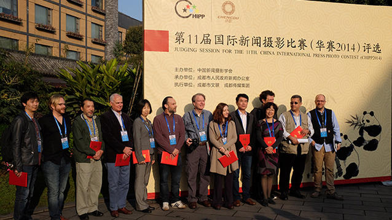
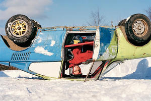
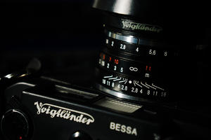
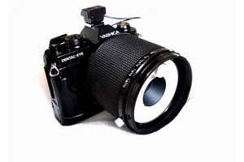
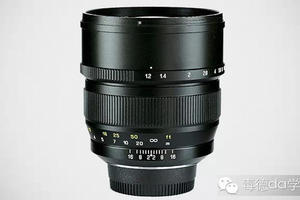
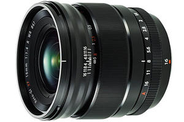
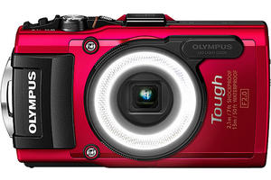
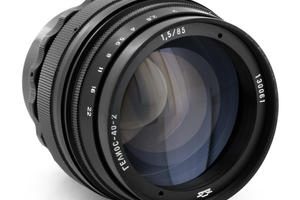
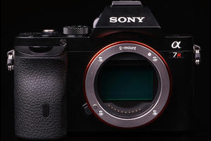

- 讲座外拍 动物拍摄主题活动（讲座＋外拍） 免费
- 摄影比赛 摄影世界“尼康奖”2015年5月月赛征稿

北极圈生活，远比你想象的欢乐
北极圈的生活对许多人来说有些许陌生，伦敦摄影师 Cristian Barnett 就扛着自己的相机来到这个神秘且充满成见的地域。...

为什么你应该用手动镜头街拍？
在相机已高度自动化的今天，为何仍有大量摄影师坚持使用手动镜头进行街头摄影？相比于自动镜头，手动镜头有何优势？...

专为牙医制造的奇怪相机
在今天的数码相机时代，Yashica Dental Eye 系列相机当之无愧是相机界最奇怪最专业的一员。
佳能 EOS 5D Mark IV 将分 IV 和 IVc 两个版本？
传佳能 EOS 5D Mark IV 将分 IV 和 IVc 两个版本，其中前者拥有2,800万像素，后者拥有1,800万像素及 4K ...

中一光学 85mm f/1.2 镜头泄露
微博博主爆出中一光学 85mm f/1.2 镜头的谍照及参数信息，并称其售价“可能在5,000元之内”。镜头或将拥有尼康、索尼 FE、佳...

富士 XF 16mm f/1.4 R WR 镜头本周发布？
富士 XF 16mm f/1.4 R WR 镜头可能于本周发布，镜头或将采用 Nano-GI 镀膜、防尘防水设计，滤镜口径 67mm，工...

奥林巴斯发布户外运动相机 TG-4
新机搭载1,600万像素背照式传感器、等效 25-100mm f/2.0-4.9 变焦镜头，支持 RAW 格式文件，具备15米防水、防尘...
Cosplay 美漫人物，堪比电影海报
美漫人物 Cosplay 大集会！只有你想不到，没有 Coser 们做不到！

新版泽尼特 HELIOS 40-2 85MM f/1.5 镜头发布
新版“旋焦王”泽尼特 HELIOS 40-2 85MM f/1.5 镜头现已发售，拥有尼康、佳能、宾得、及 M42 卡口版本，尼康卡口售...
震撼心灵的黑白动物肖像
著名动物摄影师 David Yarrow 一向喜欢把自然环境当成自己的影棚，每个动物就如模特般有着独特的眼神，仿佛在以一个偶像的身份向观...
Seth Casteel 又来了，超萌宝宝的水下入侵！
大家一定对 Seth Casteel 那超标志性的萌狗狗水下摄影有印象吧，这回 Casteel 带着另一样萌宝贝来到观众的面前。...
图说美国总统与棒球的情缘
美国人聊天，总爱用棒球术语打比方。被誉为美国文化的象征的棒球，不仅是美国人成长经历的一部分，而且还与美国总统有一段不解之缘呢。...
爸爸和女儿竟然这样“秀恩爱”
日本摄影师青山裕企拍摄了一组温馨主题的作品——成功企业家与他们的女儿。
什么让我钟情于 35mm？
35mm 相比于其它焦段有何不同之处，它又为什么如此不可替代、让人沉醉其中？在文中，作者给出了自己的答案。...

索尼 A7r II 五月发布？
传索尼 A7r II 可能于今年5月发布，高端摄像机 HDC4300 及全画幅的 RX2、A99 II 则可能于4月到来。